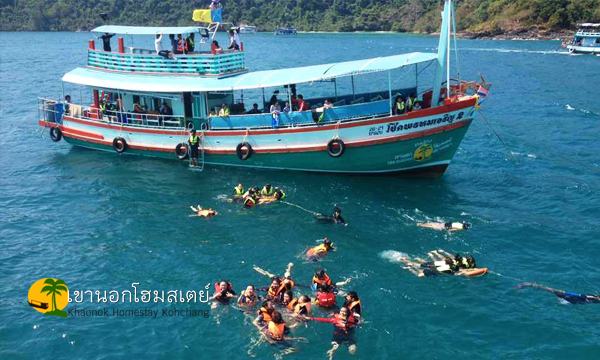
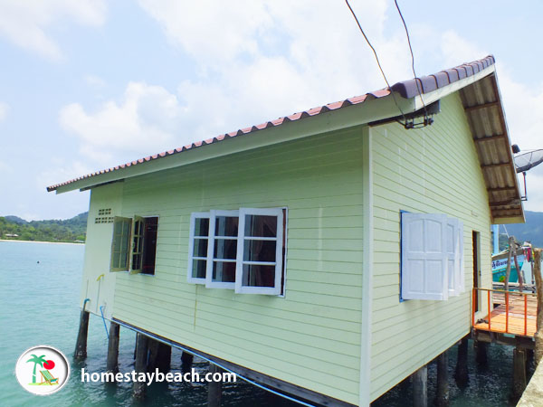
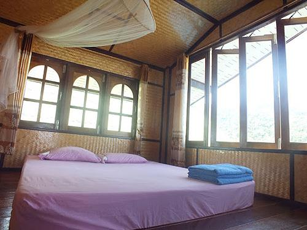

          <!-- /Navigation -->
          <div class="container">
              <div class="row">
                        <div class="col-lg-12">
                            <h1 class="page-header">โฮมสเตย์
                                <small>Homestay</small>
                            </h1>
                            <ol class="breadcrumb">
                              <li><a href="index.html">Home</a>                    </li>
                              <li class="active">โฮมสเตย์</li>                </ol>
                        </div>
          <br><br>
          <br>
        <div class="text-left">
          <h4>&nbsp;&nbsp;&nbsp;&nbsp;&nbsp; โฮมสเตย์ในจังหวัดตราด </h4>
          <div class="text-center"><br>
            <p>1.เขานอกโฮมสเตย์</p>
              <br>
            <p>มาพักที่เกาะช้างพร้อมดำน้ำตกหมึกที่ เขานอกโฮมสเตย์ เกาะช้าง ที่พักแบบโฮมสเตย์ บ้านกลางทะเล <br>
              ใกล้ชิดธรรมชาติ เมนูอาหารทะเลสดๆ กุ้ง หมึก หอยเชลล์ บรรยากาศสบายๆ เป็นกันเอง บริการแพ็คเกจทัวร์ <br>
              กิจกรรมดำน้ำชมปะการัง ตกหมึก ตกปลา ตกปูหิน พายเรือแคนนู เล่นน้ำชายหาด เลือกซื้อสินค้าพื้นเมือง ของฝาก <br>
              จากตลาดชุมชนบ้านบางเบ้า</p>
              <li>ที่ตั้ง : 6 หมู่ 4 หาดทรายขาว เกาะช้าง จ.ตราด</li>
              <li>เบอร์โทรศัพท์ : 083-078-9006, 081-564-1472, 081-558-0468, 080-285-6132</li>
              <li>เว็บไซต์ : kohchanglagoonresort.com</li>
              <li>ราคา : 1,600– 5,000 บาท</li>
<br><br>
          <p>2.HomeStay Beach</p>
                  <br>
                <p>โฮมสเตย์บีช (ป้านา) ตั้งอยู่ที่ อ่าวบางเบ้า เกาะช้างใต้ อำเภอเกาะช้าง จังหวัดตราด <br>
                  มีบริการ ดำน้ำ ตกหมึก และกิจกรรมทางน้ำต่าง ๆ มากมาย ไม่ว่าจะเป็น พายเรือคายัค หรือว่ายน้ำ <br>
                  ทางโฮมสเตย์บีชมีลักษณะโดดเด่นที่ธรรมชาติที่รายล้อมทั้งบนบกและในทะเล บรรยากาศเงียบสงบเหมาะแก่การพักผ่อน <br>
                  สังสรรค์ และโรแมนติกไปพร้อมๆ กัน<br></p>
                  <li>ที่ตั้ง : 21/1 หมู่ 4 หาดคลองพร้าว เกาะช้าง ตราด</li>
                  <li>เบอร์โทรศัพท์ : 089 402 4447</li>
                  <li>เว็บไซต์ : www.homestaybeach.com</li>

<br><br>
            <p>3.อิ่มอุ่นโฮมสเตย์ </p>
                          <br>
                        <p>อิ่มอุ่นโฮมสเตย์ เป็นที่พักสะอาดสะอ้าน ที่พักหลังใหญ่ โล่งโปรง ลมเข้าพัดเย็นสบาย <br>
                          มีบริการดำน้ำ ตกหมึก ตกปลา และมีบริการพารับประทานทะเลแบบจุใจ</p>
                          <li>ที่อยู่ : 10 หมู่ 1 หมู่บ้านชาวประมงบางเบ้า ตำบลเกาะช้างใต้ อำเภอเกาะช้าง จังหวัดตราด 23170</li>
                          <li>เบอร์โทรศัพท์ : 08-1865-9150</li>
                          <li>เว็บไซต์ : www.imounhomestay.com</li>


          <br><br><a href="index.html" class="btn btn-skin">close</a>
        </div>

          <!-- Core JavaScript Files -->
          <script src="js/jquery.min.js"></script>
          <script src="js/bootstrap.min.js"></script>
      	<script src="js/jquery.sticky.js"></script>
      	<script src="js/jquery.flexslider-min.js"></script>
          <script src="js/jquery.easing.min.js"></script>
      	<script src="js/jquery.scrollTo.js"></script>
      	<script src="js/jquery.appear.js"></script>
      	<script src="js/stellar.js"></script>
      	<script src="js/wow.min.js"></script>
      	<script src="js/owl.carousel.min.js"></script>
      	<script src="js/nivo-lightbox.min.js"></script>

          <script src="js/custom.js"></script>

      </body>

      </html>

    </div>
    <!-- Core JavaScript Files -->
    <script src="js/jquery.min.js"></script>
    <script src="js/bootstrap.min.js"></script>
	<script src="js/jquery.sticky.js"></script>
	<script src="js/jquery.flexslider-min.js"></script>
    <script src="js/jquery.easing.min.js"></script>
	<script src="js/jquery.scrollTo.js"></script>
	<script src="js/jquery.appear.js"></script>
	<script src="js/stellar.js"></script>
	<script src="js/wow.min.js"></script>
	<script src="js/owl.carousel.min.js"></script>
	<script src="js/nivo-lightbox.min.js"></script>

    <script src="js/custom.js"></script>
    </div>
    </div>
</body>
</html>
